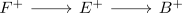
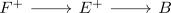
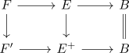
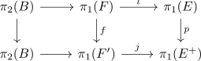

hypoabelianization preserves fiber sequence with hypoabelian base anima
Proposition
Let

be a fiber sequence where $B$ is a hypoabelian anima.
Then

resp.

are also fiber sequences.
Proof
Let $F' \rightarrow E^+ \rightarrow B \simeq B^+$ be the induced fiber sequence. Then we get a diagram

and it suffices to show that $F'$ is the hypoabelianization:
Here (after using the pointwise construction etc.) we may assume that $E$ (and hence $E^+$) are connected anima. then $F \rightarrow F'$ is an acyclic map (cf. pullback of an acyclic map as acyclic map)
Then consider the exact puppe sequence.
where the vertical map is the identity by the naturality of the puppe sequence.
In particular $\Omega B$ has abelian $\pi_1$ (since it is given by $\pi_2(B)$.
Now consider applying $\pi_1$ to get

now by acyclic map as surjection on pi_1 with perfect kernel we get that $\pi_1(F) \rightarrow \pi_1(F)$ is surjective with perfect kernel. We want to show that the perfect core $P$ is contained in the kernel (and hence the perfect core equals the kernel):
Now $jf(P) = p(\iota(P)) = 0 \subseteq \pi_1(E^+)$ since the image of a perfect group is again perfect. Thus $f(P) \subseteq \mathrm{im}(\pi_2(B) \rightarrow \pi_1(F'))$. But $\mathrm{im}(\pi_2(B))$ is abelian, hence $f(P) = 0$ or $P\subseteq \mathrm{ker}(\pi_1(F) \rightarrow \pi_1(F'))$.
Hence $F'$ is the hypoabelianization of $F$